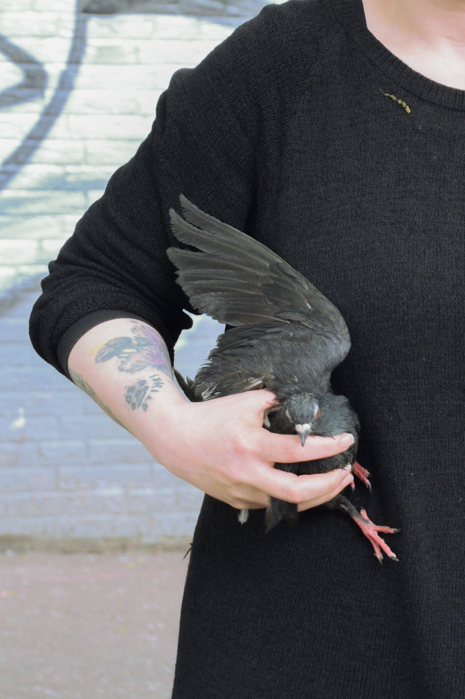
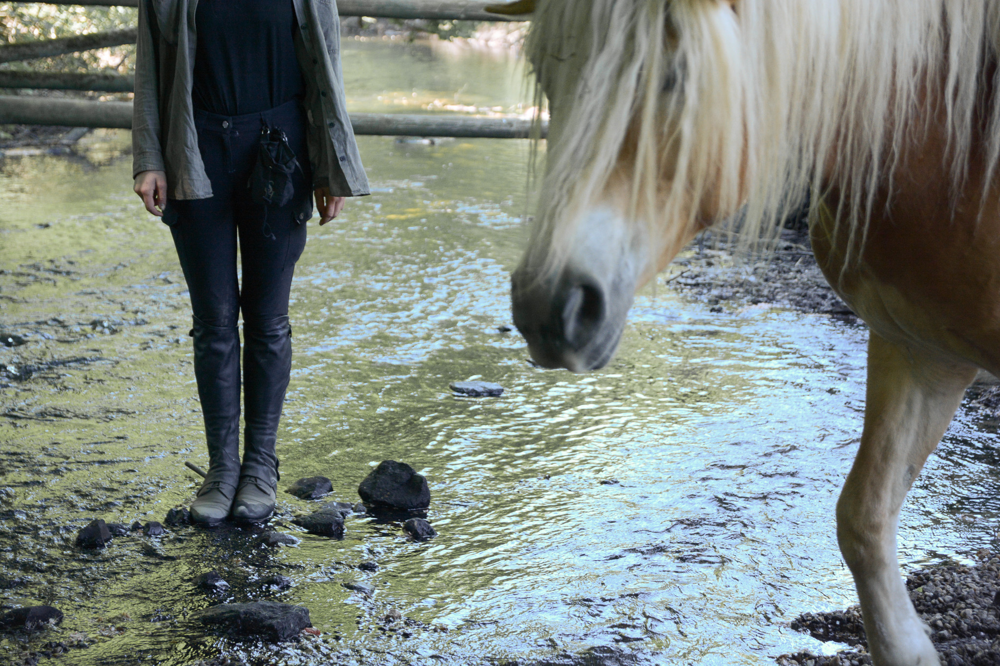
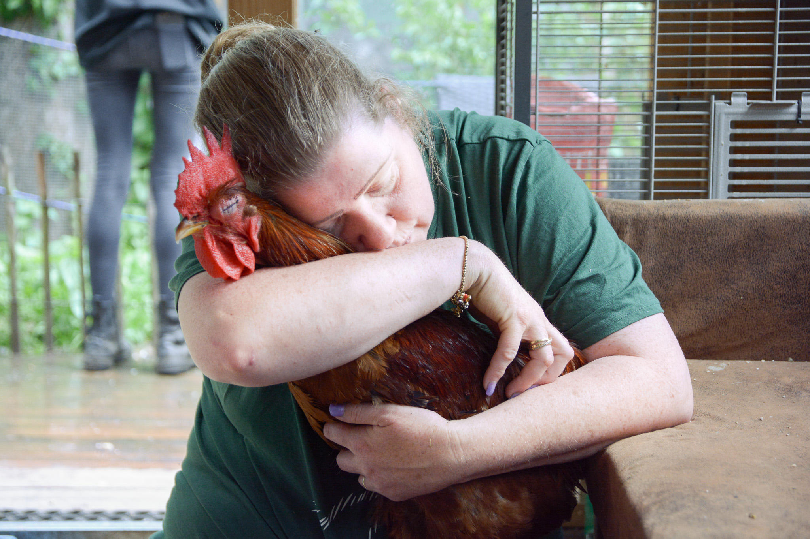
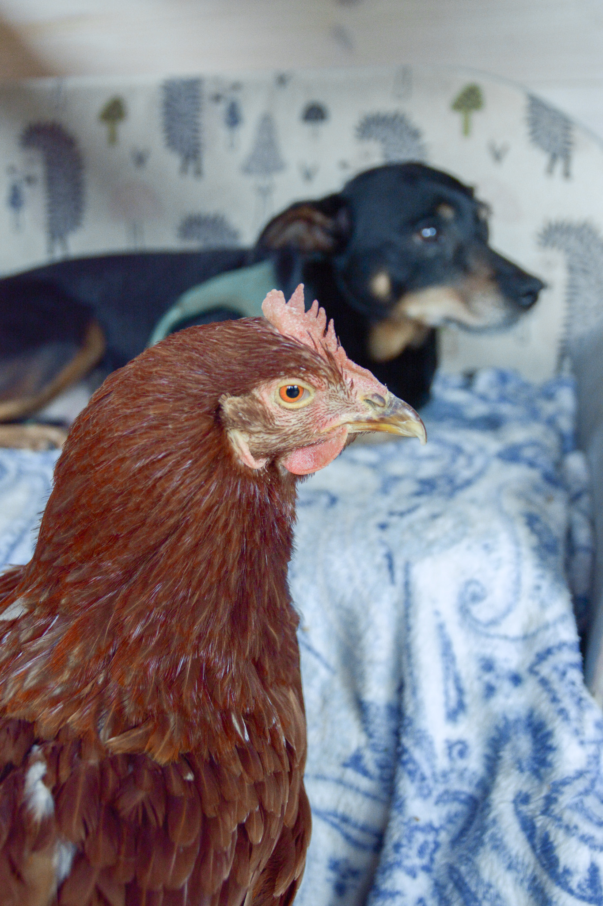
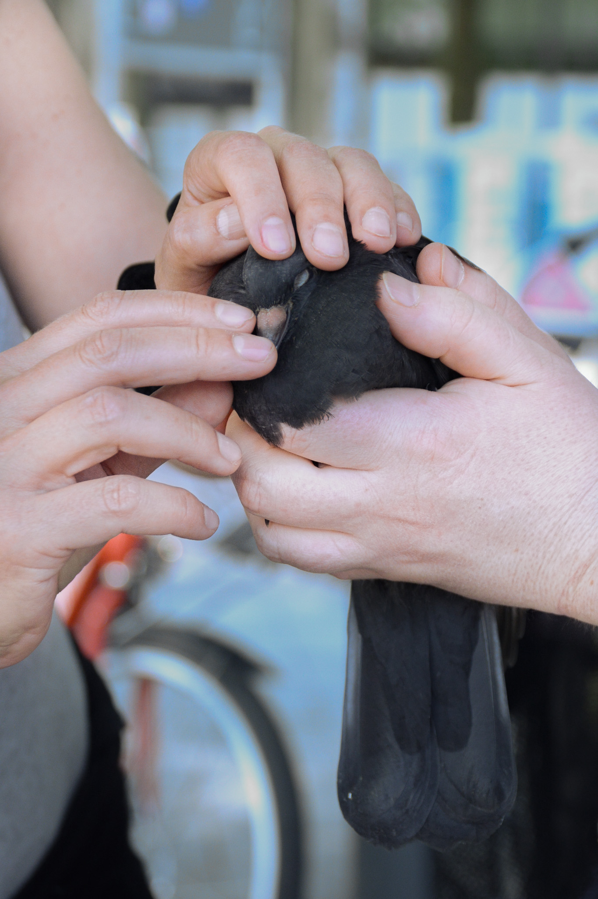
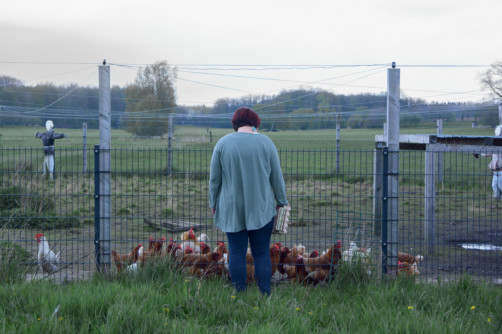

❮
❯
Coming from the question of who cares for injured pigeons in Hamburg’s cityscape, I came into contact with ‘Gandolf’s pigeon friends’, a group of volunteers dedicating their time for caring for injured pigeons on the streets. Accompanying them and visiting a horse sanctuary, emergency foster homes for mistreated guinea-pigs and a shelter for domestic and such for wild animals, the project resulted in a documentation of the selfless yet fragile relationship between the animals and their helpers.